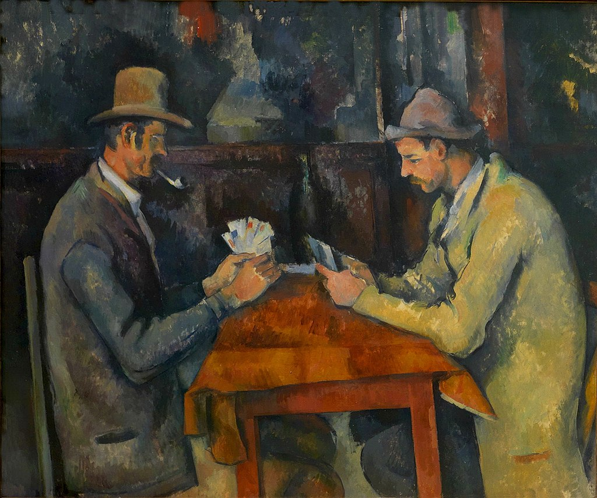

<head>
<meta charset="UTF-8" />
<meta name="keywords" content="drawing, painting" />
<meta name="description" content="drawings by Sunjy" />
<title>Sunjy</title>
<link rel="shortcut icon" type="image/x-icon" href="../../mImages/mCommon/favicon.ico" media="screen" />
<link rel="stylesheet" type="text/css" href="../../mCsses/mCommon/mCssA.css" />
<link rel="stylesheet" type="text/css" href="../../mCsses/mCommon/mCssB.css" />
<link rel="stylesheet" type="text/css" href="../../mCsses/mCommon/mCssC.css" />
<link rel="stylesheet" type="text/css" href="../../mCsses/mCommon/mCssD.css" />
<link rel="stylesheet" type="text/css" href="../../mCsses/mContent/mCssA.css" />
<link rel="stylesheet" type="text/css" href="../../mCsses/mContent/mCssB.css" />
<link rel="stylesheet" type="text/css" href="../../mCsses/mContent/mCssC.css" />
<link rel="stylesheet" type="text/css" href="../../mCsses/mContent/mCssD.css" />
</head>
<script type="text/javascript" src="../../mScripts/mContent/mContentAA.js" /></script>
<script type="text/javascript" src="../../mScripts/mContent/mContentAB.js" /></script>
<script type="text/javascript" src="../../mScripts/mContent/mContentAC.js" /></script>
<script type="text/javascript" src="../../mScripts/mContent/mContentAD.js" /></script>
<script type="text/javascript"></script> 
<script type="text/javascript">
document.write('<div class="mImgAbsolute"></div>');
/*
document.write('<p class="mFontSizeBColor" />From a white paper...</p>');
document.write('<table class="center"><tr><td>');
document.write('');
document.write('</td></tr></table>');
*/
</script>


<script type="text/javascript">
document.write('<p class="mFontSizeBColor" />The Card Players</p>');
document.write('<p class="mFontSizeSColor" />“The Card Players” by Paul Cézanne is one in a series of five oil paintings by the French Post-Impressionist artist painted during Cézanne’s final period in the early 1890s.<br><br>Cézanne’s famous paintings of peasant card players are considered to be among his most iconic and influential works. This version at the Courtauld Gallery portrays just two card players, with one of the players smoking a clay pipe.<br><br>Cézanne’s created many preparatory works for the Card Players paintings, which indicates his commitment to this series of paintings.<br><br>Rather than posing his players as group playing cards, Cézanne made studies of them individually and only brought them together in his paintings. Many different farm workers came to sit for him throughout this project, often smoking their clay pipes. <br><br>Cézanne experimented with his compositions, striving to express the essence of these farmworkers and their traditional card game.<br><br>This project resulted in five closely related paintings of different sizes showing men seated at a rustic table playing cards.<br><br>One version of The Card Players was sold in 2011 for a price variously estimated at over $250 million, making it the third or fourth most expensive work of art ever sold.<br></p>');
document.write('<table class="center" /><tr><td>');
document.write('<br>Cézanne’s famous paintings of peasant card players are considered to be among his most iconic and influential works. This version at the Courtauld Gallery portrays just two card players, with one of the players smoking a clay pipe.<br><br>Cézanne’s created many preparatory works for the Card Players paintings, which indicates his commitment to this series of paintings.<br><br>Rather than posing his players as group playing cards, Cézanne made studies of them individually and only brought them together in his paintings. Many different farm workers came to sit for him throughout this project, often smoking their clay pipes. <br><br>Cézanne experimented with his compositions, striving to express the essence of these farmworkers and their traditional card game.<br><br>This project resulted in five closely related paintings of different sizes showing men seated at a rustic table playing cards.<br><br>One version of The Card Players was sold in 2011 for a price variously estimated at over $250 million, making it the third or fourth most expensive work of art ever sold.<br>" />');
document.write('</td></tr></table>');
</script>


